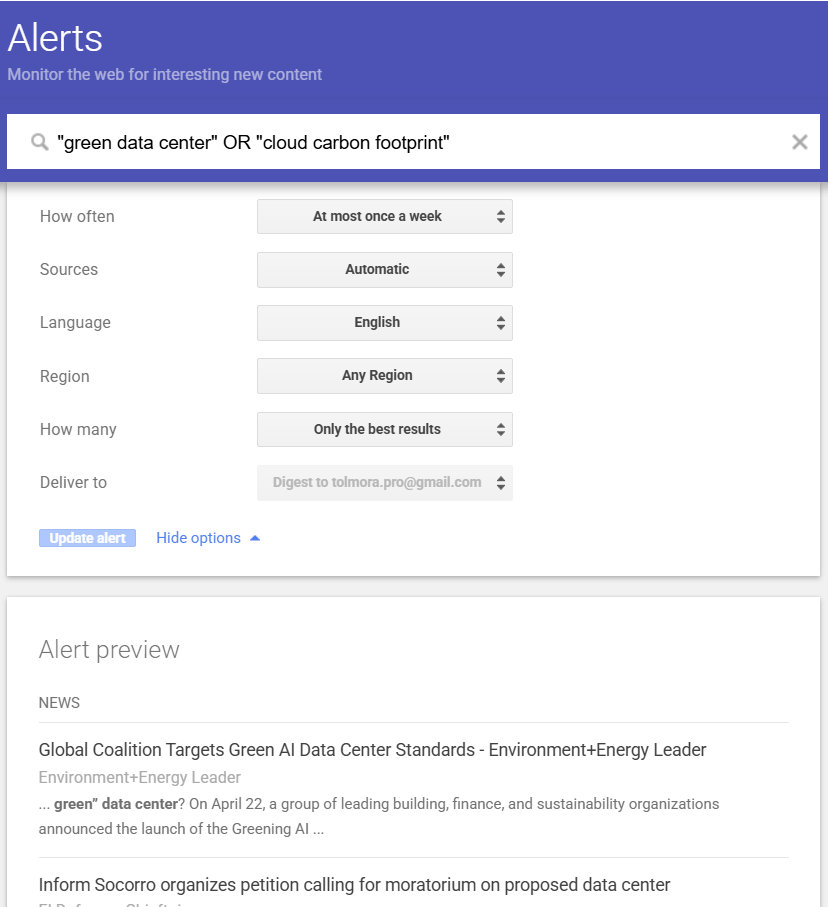

Détails de la Veille
- Thème Green IT & Cloud Infrastructure
- Outils utilisés Google Alerts, Flux RSS, Presse Spécialisée
- Fréquence d'actualisation Hebdomadaire
Axes de recherche
- Nouvelles technologies de refroidissement (Liquid cooling, etc.)
- Optimisation du PUE (Power Usage Effectiveness)
- Mesure de l'empreinte carbone du Cloud
- Stratégies RSE des GAFAM et hébergeurs
- Réglementations et normes (Green AI)
Contexte et Enjeux
À l'ère de l'intelligence artificielle et du Big Data, les centres de données (data centers) consomment des quantités astronomiques d'électricité et d'eau, principalement pour l'alimentation et le refroidissement des serveurs.
Cette veille technologique vise à suivre comment l'industrie de la tech tente d'atténuer cette empreinte écologique. De la conception de bâtiments éco-responsables à l'innovation dans les systèmes de refroidissement liquides, l'objectif est de comprendre les défis techniques d'une infrastructure numérique durable.
Lien avec mon Projet
En tant que futur développeur / Data Analyst, je serai amené à traiter d'importants volumes de données et à utiliser des services Cloud.
Comprendre l'impact des infrastructures sous-jacentes est essentiel. Concevoir du code optimisé et choisir des hébergeurs responsables font désormais partie des compétences d'un informaticien moderne (Green IT).
Les concepts clés
-
Le PUE Indicateur mesurant l'efficacité énergétique d'un data center (plus il est proche de 1, mieux c'est).
-
Liquid Cooling Technologies de refroidissement par immersion ou par eau, bien plus efficaces que l'air.
Méthodologie & Automatisation
Mise en place d'alertes automatisées pour la collecte d'informations.
Requête : "server cooling technology" OR "PUE" "data center"
Suivi ciblé sur les innovations matérielles et l'efficacité énergétique.

Requête : "green data center" OR "cloud carbon footprint"
Surveillance globale de l'empreinte carbone et des initiatives d'infrastructure verte.
